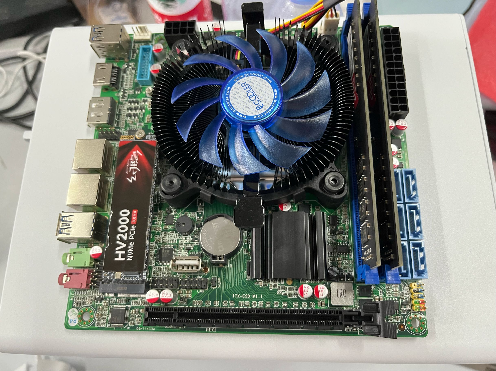
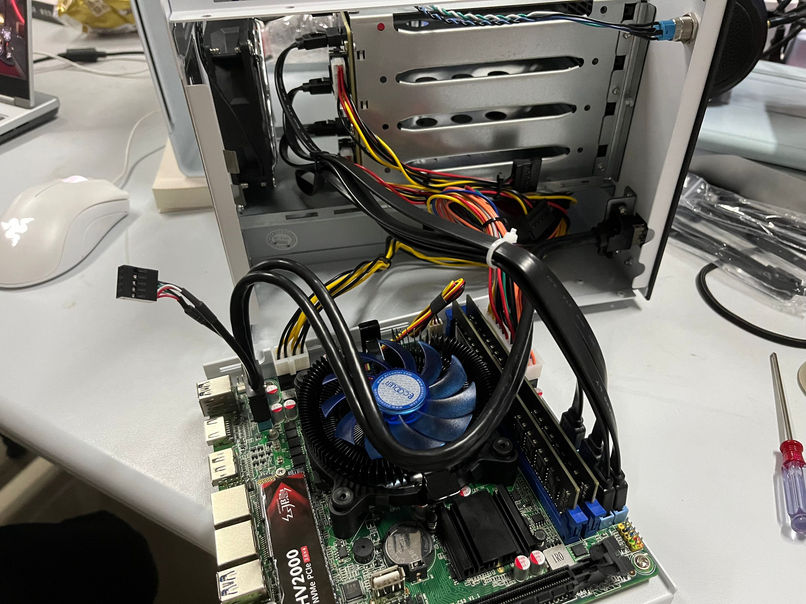
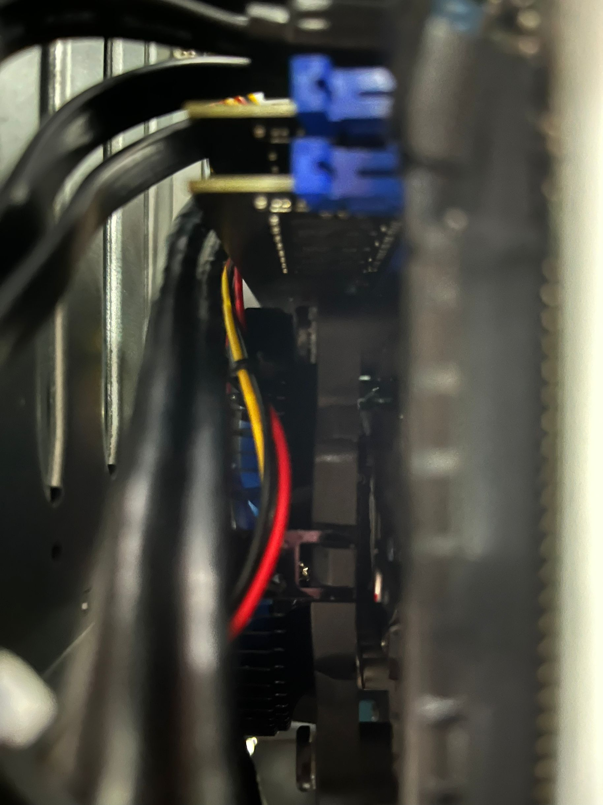
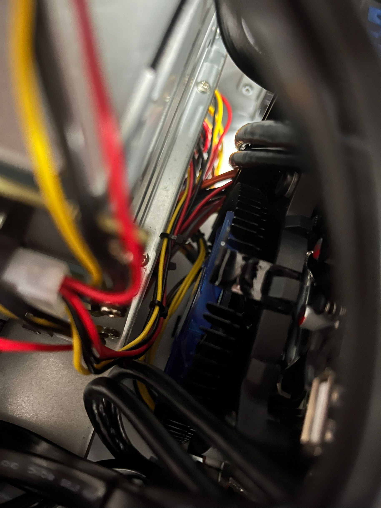
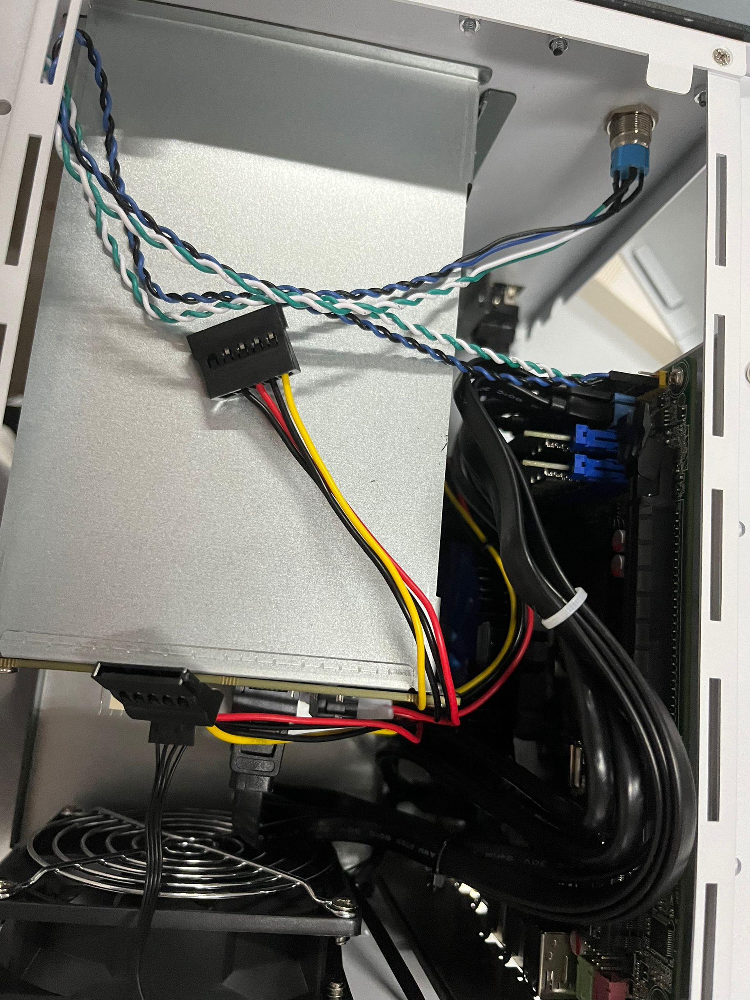
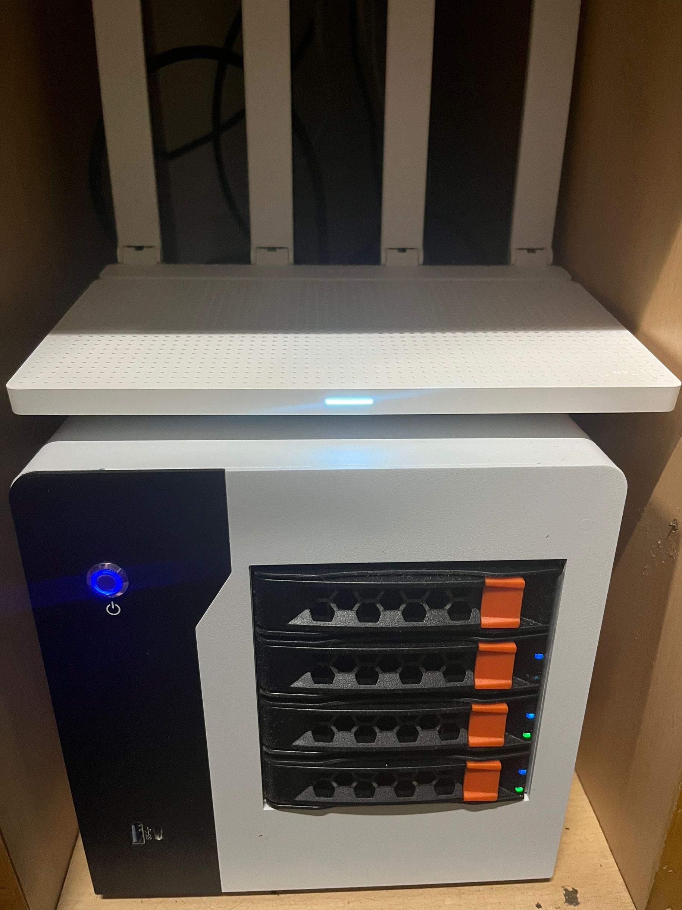
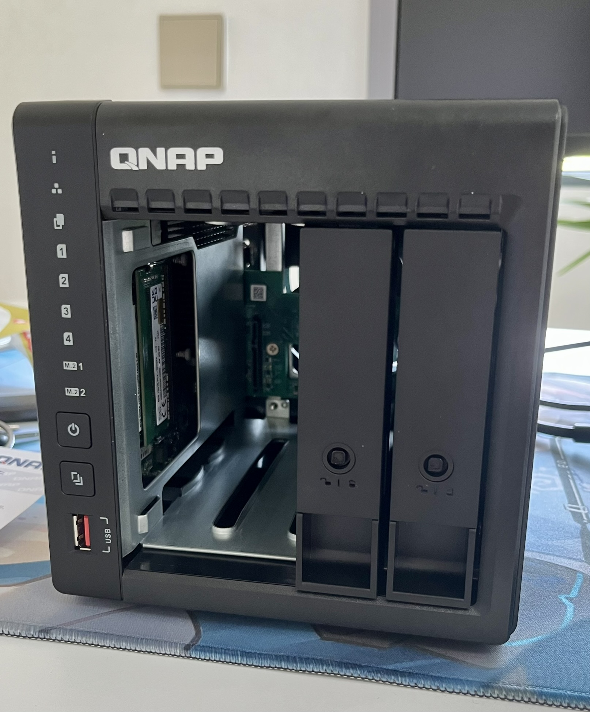

NAS（1）—— 概述 & 硬件
概述
我们为什么需要一台 NAS？
笔者在组建自己的第一台 NAS 之前，曾购置过一台 N100 的迷你主机准系统，给它装入了 Windows 10 系统，并在上面尝试了 PT、Jellyfin 等服务。
有一天笔者想找到自己 5 年前的一份文件，但是找遍了所有设备都没有。笔者的设备太多了：手机、平板、笔记本、台式机、N100 主机、Switch，还有几个 U 盘…有的时候一份文件需要在多个设备上工作，难以同步，使用 Onedrive 等方式又太慢，等待同步的时间令人着急。这种混乱的文件管理方式让笔者有了自己组装一台 NAS 的想法：不仅需要以稳定的方式存储数据，还能够运行 PT、Jellyfin 等服务。
DIY NAS
DIY 与成熟方案的比较
如果你有 DIY 的能力和意愿，或者就是单纯地喜欢折腾，笔者还是很建议采用 DIY 方案的。
DIY NAS 的优点：
- 硬件配置完全由自己挑选
- 性价比高
- 配置后续可升级，扩展性好
DIY NAS 的缺点：
- 组装硬件较为麻烦，需要自己手动接线
- 硬件兼容性未知，可能会出现意想不到的问题
- 如果出现问题，售后较困难
- 软件配置需要耗费时间精力
相对应地，如果你非常明确自己的需求（如：我的数据存储量大概有 8T 左右，都是媒体文件，并且需要使用 PT 以及多媒体管理服务），并且不想花费太多时间精力在配置上，希望能够开箱即用，那么你可以选择威联通、群晖等成熟 NAS 方案。
成品 NAS 的优点：
- 省心、省事、省时间
- 有自带的较好用的同步、多媒体管理等软件
- 完善的售后服务
成品 NAS 的缺点：
- 性价比低
- 大多数机器 CPU 性能羸弱
- 自带系统存在很多限制
以笔者的 NAS 为例
准系统
笔者的 NAS 主要是参考了 @LeSnow-Ye 的机器，配置如下：
| 型号 | 价格 | 来源 | 备注 | |
|---|---|---|---|---|
| 机箱 | 梵隆 NAS4-200 | 236.91 | 拼多多 | |
| CPU | G4600 | 47.1 | 拼多多 | |
| 主板 | 纳斯 B365 | 447.09 | 拼多多 | 选 B365 而不是 B250 其实是因为没货了 |
| 电源 | 航嘉 HK350-94FP | 93.8 | 拼多多 | |
| 内存 | DDR4 16G 2666 * 2 | 233 | 闲鱼 | 组 ZFS 会比较吃内存 |
| 散热 | 超频三蜂鸟 | 27.61 | 拼多多 | 很难扣上去，安装时注意方向 |
| 总计 | 1085.51 |
Lesnow：机箱选择梵隆 NAS4-200 是因为它达到了价格、做工、外观的三赢，全金属机身的 ITX NAS 机箱，如果不想选择二手机箱，它几乎没有对手。
关于纳斯主板可以看看钱韦德的这篇文章。
其实 CPU 原来想选择 8100T，但看了价格后实在劝退（写作时 pdd 价格 190+）。而 G4600 只需要 47 块钱，参数为 2C4T 3.6GHz，还有 HD 630 核显，应付 4K 硬解轻轻松松。笔者目前也没有多开虚拟机的需求，理所当然就选择了 G4600，后续也可以升级到 9100T。
由于机箱的限制，电源只能选择 Flex（小 1U）规格的。在这方面最好的选择是益衡的 7025B 250W 电源，静音又稳定，但价格 200+（如果你预算充足，直接上海韵）。笔者选择的是航嘉 HK350-94FP 250W 电源，100 元左右，品牌还是有一些保障的。
硬盘
| 型号 | 价格 | 来源 | 备注 | |
|---|---|---|---|---|
| SSD | 幻隐 HV2000 | 0 | 闲置 | |
| HDD | ST4000VX007 | 朋友处购买 | ||
| HDD | ST4000VX015 * 2 | 838 | 淘宝 |
相比于 VX015，更推荐 VX016。这两个是同一块盘，而 VX015 是海康 OEM，而且相比 VX016 还要便宜几十块钱，但：
- 如果硬盘出现问题，海康售后可能会发回叠瓦盘
- VX016 会附带一次数据恢复服务，如果平时数据存储习惯不好，更推荐选用 VX016
组装

这台机器组装还是需要在理线上花些功夫，毕竟大多数空间都让给了 4 个 HDD 盘位。特别注意，走线时最好要绕过内存，否则盖上主板后可能会导致内存松动无法开机。




装好之后体积还是挺小巧的。

以笔者的成品 NAS 为例
笔者搬到新家之后，家里新添置了一些智能家居设备，但它们来自不同的品牌，需要像 Home Assistant 这样的中枢将它们统一起来。同时，也是为了后续可能的监控安装以及存储需求，在稳定性以及易安装性方面考虑，选择了威联通 QNAP 品牌的 TS-464C2 的四盘位 NAS。配置如下：
| 型号 | 价格 | 来源 | 备注 | |
|---|---|---|---|---|
| 准系统 + HDD | TS-464C2 + ST4000VN006 *2 | 3219 | 京东 | |
| CPU | N5095 | / | 准系统 | 处理器真不舍得给 |
| 内存 | 原装 8G + DDR4 8G 3200 | 91.99 | 京东 | 组 ZFS 比较吃内存 |
| SSD | 西数 SN5000 1T | 446.91 | 京东 | |
| 总计 | 3757.9 |

下一章节：成品 NAS 配置（QNAP）